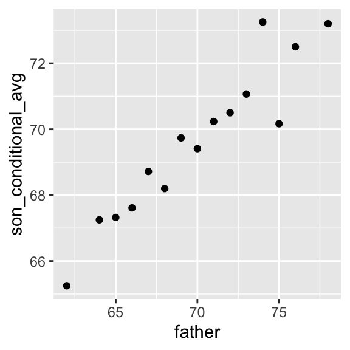
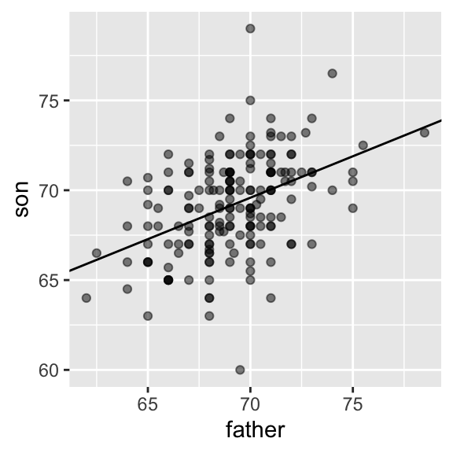
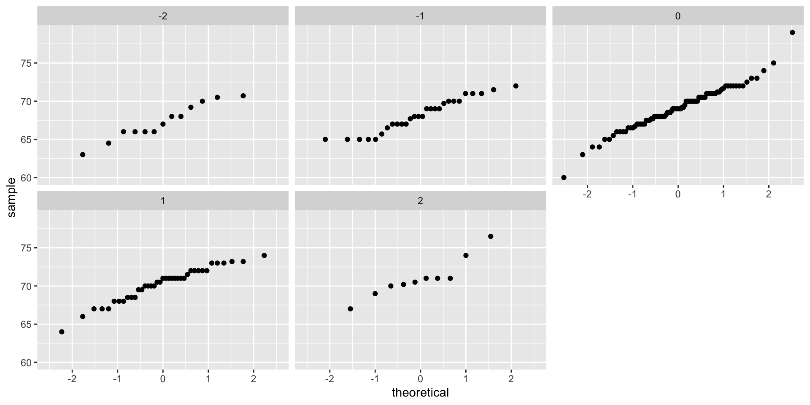
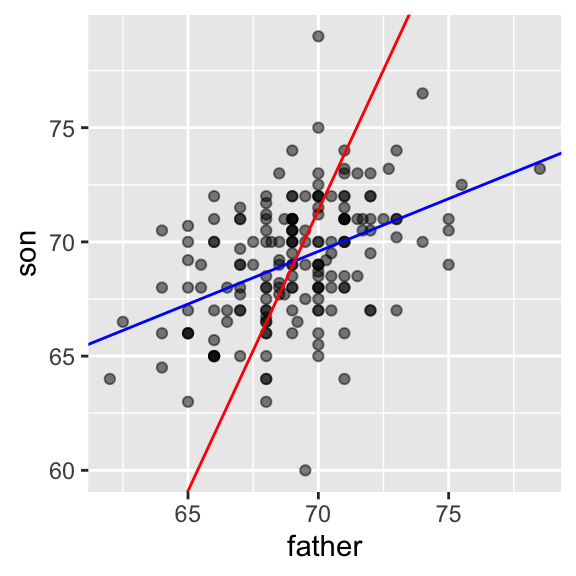
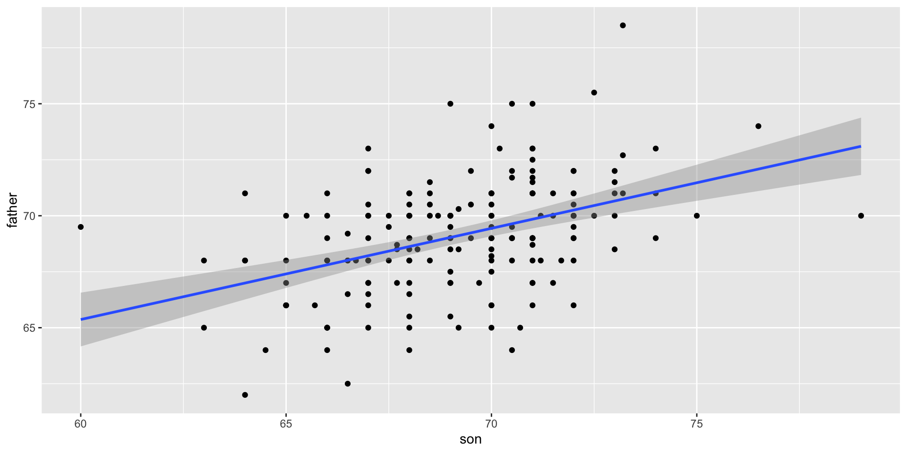
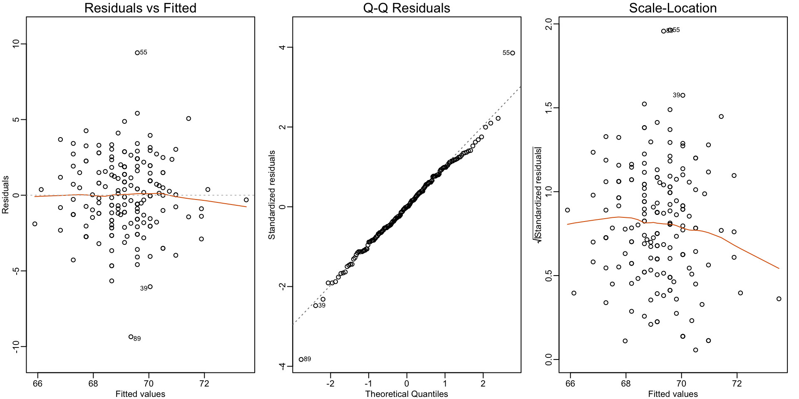
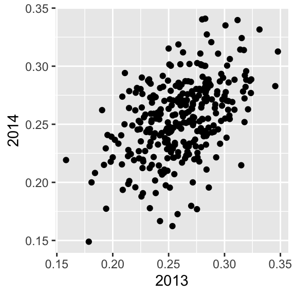

Regression
2024-11-05
Case study: is height hereditary?
To understand the concepts of correlation and simple regression, we actually use the dataset from which regression was born.
The example is from genetics.
Francis Galton studied the variation and heredity of human traits.
Among many other traits, Galton collected and studied height data from families to try to understand heredity.
Case study: is height hereditary?
While doing this, he developed the concepts of correlation and regression.
At the time this data was collected, our knowledge of genetics was limited compared to what we know today.
A very specific question Galton tried to answer was: how well can we predict a child’s height based on the parents’ height?
Case study: is height hereditary?
We have access to Galton’s family height data through the HistData package.
This data contains heights on several dozen families: mothers, fathers, daughters, and sons.
Case study: is height hereditary?
- To imitate Galton’s analysis, we will create a dataset with the heights of fathers and a randomly selected son of each family:
Case study: is height hereditary?
Suppose we were asked to summarize the father and son data.
Since both distributions are well approximated by the normal distribution, we could use:
Case study: is height hereditary?
- This summary fails to describe an important characteristic of the data:

Case study: is height hereditary?
The correlation coefficient is an informative summary of how two variables move together.
It’s defined for a list of pairs \((x_1, y_1), \dots, (x_n,y_n)\) as:
\[ \rho = \frac{1}{n} \sum_{i=1}^n \left( \frac{x_i-\mu_x}{\sigma_x} \right)\left( \frac{y_i-\mu_y}{\sigma_y} \right) \]
- with \(\mu_x, \mu_y\) the averages of \(x_1,\dots, x_n\) and \(y_1, \dots, y_n\), respectively, and \(\sigma_x, \sigma_y\) the standard deviations.
The correlation coefficient
\(\rho\) is the greek letter for \(r\).
It is not a coincidence that \(r\) is the first letter in regression.
We learn about the connection between correlation and regression.
The correlation coefficient
- We can represent the formula above with R code using:
The correlation coefficient
To understand why this equation does in fact summarize how two variables move together, consider the \(i\)-th entry of \(x\) is \(\left( \frac{x_i-\mu_x}{\sigma_x} \right)\) SDs away from the average.
Similarly, the \(y_i\) that is paired with \(x_i\), is \(\left( \frac{y_1-\mu_y}{\sigma_y} \right)\) SDs away from the average \(y\).
If \(x\) and \(y\) are unrelated, the product \(\left( \frac{x_i-\mu_x}{\sigma_x} \right)\left( \frac{y_i-\mu_y}{\sigma_y} \right)\) will be positive ( \(+ \times +\) and \(- \times -\) ) as often as negative (\(+ \times -\) and \(- \times +\)) and will average out to about 0.
The correlation coefficient
This correlation is the average and therefore unrelated variables will have 0 correlation.
If instead the quantities vary together, then we are averaging mostly positive products (\(+ \times +\) and \(- \times -\)) and we get a positive correlation.
If they vary in opposite directions, we get a negative correlation.
The correlation coefficient
The correlation coefficient is always between -1 and 1.
We can show this mathematically.
The correlation coefficient
- The correlation, computed with the function
cor, between father and son’s heights is about 0.5:
Warning
The function
cor(x, y)computes the sample correlation, which divides the sum of products bylength(x)-1rather thanlength(x).The rationale for this is akin to the reason we divide by
length(x)-1when computing the sample standard deviationsd(x).Namely, this adjustment helps account for the degrees of freedom in the sample, which is necessary for unbiased estimates.
The correlation coefficient
- Correlations ranging from -0.9 to 0.99:
Sample correlation is random
Before we continue connecting correlation to regression, let’s remind ourselves about random variability.
In most applications, we observe data that includes random variation.
For example, in many cases, we do not observe data for the entire population of interest, but rather for a random sample.
As with the average and standard deviation, the sample correlation is the most commonly used estimate of the population correlation.
Sample correlation is random
This implies that the correlation we compute and use as a summary is a random variable.
By way of illustration, let’s assume that the 179 pairs of fathers and sons is our entire population.
Sample correlation is random
A less fortunate geneticist can only afford measurements from a random sample of 25 pairs.
The sample correlation can be computed with:
ris a random variable.
Sample correlation is random
- We can run a Monte Carlo simulation to see its distribution:
Sample correlation is random
- We see that the expected value of
ris the population correlation:
- and that it has a relatively high standard error relative to the range of values
rcan take:
Sample correlation is random
So, when interpreting correlations, remember that correlations derived from samples are estimates containing uncertainty.
Also, note that because the sample correlation is an average of independent draws, the central limit actually applies.
Therefore, for large enough \(N\), the distribution of
ris approximately normal with expected value \(\rho\).
Sample correlation is random
- The standard deviation, which is somewhat complex to derive, is \(\sqrt{\frac{1-r^2}{N-2}}\).
Sample correlation is random
- \(N=25\) does not seem to be large enough:
Correlation not always useful
Correlation is not always a good summary of the relationship between two variables.
The following four artificial datasets, referred to as Anscombe’s quartet, famously illustrate this point.
Correlation not always useful
- All these pairs have a correlation of 0.82:
Correlation not always useful
Correlation is only meaningful in a particular context.
To help us understand when correlation is meaningful as a summary statistic, we return to the example of predicting a son’s height using his father’s height.
Conditional expectations
Suppose we are asked to guess the height of a randomly selected son and we don’t know his father’s height.
Because the distribution of sons’ heights is approximately normal, we know the average height, 69.2, is the value with the highest proportion and would be the prediction with the highest chance of minimizing the error.
But what if we are told that the father is taller than average, say 72 inches tall, do we still guess 69.2 for the son?
Conditional expectations
It turns out that, if we were able to collect data from a very large number of fathers that are 72 inches, the distribution of their sons’ heights would be normally distributed.
This implies that the average of the distribution computed on this subset would be our best prediction.
We call this approach conditioning.
The general idea is that we stratify a population into groups and compute summaries in each group.
Conditional expectations
To provide a mathematical description of conditioning, consider that we have a population of pairs of values \((x_1,y_1),\dots,(x_n,y_n)\), for example all father and son heights in England.
In the previous chapter, we learned that if you take a random pair \((X,Y)\), the expected value and best predictor of \(Y\) is \(\mbox{E}(Y) = \mu_y\), the population average \(1/n\sum_{i=1}^n y_i\).
However, we are no longer interested in the general population.
Conditional expectations
Instead, we are interested in only the subset of a population with a specific \(x_i\) value, 72 inches in our example.
This subset of the population is also a population, and thus, the same principles and properties we have learned apply.
The \(y_i\) in the subpopulation have a distribution, referred to as the conditional distribution, and this distribution has an expected value referred to as the conditional expectation.
Conditional expectations
In our example, the conditional expectation is the average height of all sons in England with fathers that are 72 inches.
The statistical notation for the conditional expectation is:
\[ \mbox{E}(Y \mid X = x) \]
- with \(x\) representing the fixed value that defines that subset, for example 72 inches.
Conditional expectations
- Similarly, we denote the standard deviation of the strata with:
\[ \mbox{SD}(Y \mid X = x) = \sqrt{\mbox{Var}(Y \mid X = x)} \]
Conditional expectations
Because the conditional expectation \(E(Y\mid X=x)\) is the best predictor for the random variable \(Y\) for an individual in the strata defined by \(X=x\), many data science challenges reduce to estimating this quantity.
The conditional standard deviation quantifies the precision of the prediction.
In the example we have been considering, we are interested in computing the average son height conditioned on the father being 72 inches tall.
We want to estimate \(E(Y|X=72)\) using the sample collected by Galton.
Conditional expectations
We previously learned that the sample average is the preferred approach to estimating the population average.
A challenge when using this approach is that we don’t have many data points matching exactly one value in our sample.
For example, we have only:
- fathers that are exactly 72 inches.
Conditional expectations
- If we change the number to 72.5, we get even fewer data points:
Conditional expectations
A practical way to improve these estimates of the conditional expectations is to define strata of observations with similar value of \(x\).
In our example, we can round father heights to the nearest inch and assume that they are all 72 inches.
If we do this, we end up with the following prediction for the son of a father that is 72 inches tall:
Conditional expectations
conditional_avg <- galton_heights |>
filter(round(father) == 72) |>
summarize(avg = mean(son)) |>
pull(avg)
conditional_avg [1] 70.5- Note that a 72 inch father is taller than average, specifically (72.0 - 69.1)/2.5 = 1.1 standard deviations taller than the average father.
Conditional expectations
Our prediction 70.5 is also taller than average, but only 0.49 standard deviations larger than the average son.
The sons of 72 inch fathers have regressed some to the average height.
We notice that the reduction in how many SDs taller is about 0.5, which happens to be the correlation. This is not a coincidence.
If we want to make a prediction of any height, not just 72 inches, we could apply the same approach to each strata.
Conditional expectations
- Stratification followed by boxplots lets us see the distribution of each group:
Conditional expectations
Not surprisingly, the centers of the groups are increasing with height.
Furthermore, these centers appear to follow a linear relationship.
Below, we plot the averages of each group.
If we take into account that these averages are random variables with standard errors, the data is consistent with these points following a straight line:
Conditional expectations
Conditional expectations
The fact that these conditional averages follow a line is not a coincidence.
The line these averages follow is what we call the regression line.
However, it is not always appropriate to estimate conditional expectations with the regression line, so we also describe Galton’s theoretical justification for using the regression line.
The regression line
- If we are predicting a random variable \(Y\) knowing the value of another \(X=x\) using a regression line, then we predict that for every standard deviation, \(\sigma_X\), that \(x\) increases above the average \(\mu_X\), our prediction \(\hat{Y}\) increase \(\rho\) standard deviations \(\sigma_Y\) above the average \(\mu_Y\) with \(\rho\) the correlation between \(X\) and \(Y\).
The regression line
- The formula for the regression is therefore:
\[ \left( \frac{\hat{Y}-\mu_Y}{\sigma_Y} \right) = \rho \left( \frac{x-\mu_X}{\sigma_X} \right) \]
The regression line
- We can rewrite it like this:
\[ \hat{Y} = \mu_Y + \rho \left( \frac{x-\mu_X}{\sigma_X} \right) \sigma_Y \]
If there is perfect correlation, the regression line predicts an increase that is the same number of SDs.
If there is 0 correlation, then we don’t use \(x\) at all for the prediction and simply predict the average \(\mu_Y\).
For values between 0 and 1, the prediction is somewhere in between.
If the correlation is negative, we predict a reduction instead of an increase.
The regression line
Note that if the correlation is positive and lower than 1, our prediction is closer, in standard units, to the average height than the value used to predict, \(x\), is to the average of the \(x\)s.
This is why we call it regression: the son regresses to the average height.
In fact, the title of Galton’s paper was: Regression toward mediocrity in hereditary stature.
The regression line
- To add regression lines to plots, we will need the above formula in the form:
\[ \hat{Y} = b + mx \mbox{ with slope } m = \rho \frac{\sigma_y}{\sigma_x} \mbox{ and intercept } b=\mu_y - m \mu_x \]
The regression line
- Here we add the regression line to the original data:
mu_x <- mean(galton_heights$father)
mu_y <- mean(galton_heights$son)
s_x <- sd(galton_heights$father)
s_y <- sd(galton_heights$son)
r <- cor(galton_heights$father, galton_heights$son)
galton_heights |>
ggplot(aes(father, son)) +
geom_point(alpha = 0.5) +
geom_abline(slope = r * s_y/s_x, intercept = mu_y - r * s_y/s_x * mu_x) The regression line
The regression line
- The regression formula implies that if we first standardize the variables, that is subtract the average and divide by the standard deviation, then the regression line has intercept 0 and slope equal to the correlation \(\rho\).
The regression line
- You can make same plot, but using standard units like this:
Regression improves precision
Let’s compare the two approaches to prediction that we have presented:
Round fathers’ heights to closest inch, stratify, and then take the average.
Compute the regression line and use it to predict.
We use a Monte Carlo simulation sampling \(N=50\) families:
Regression improves precision
B <- 1000
N <- 50
set.seed(1983)
conditional_avg <- replicate(B, {
dat <- sample_n(galton_heights, N)
dat |> filter(round(father) == 72) |>
summarize(avg = mean(son)) |>
pull(avg)
})
regression_prediction <- replicate(B, {
dat <- sample_n(galton_heights, N)
mu_x <- mean(dat$father)
mu_y <- mean(dat$son)
s_x <- sd(dat$father)
s_y <- sd(dat$son)
r <- cor(dat$father, dat$son)
mu_y + r*(72 - mu_x)/s_x*s_y
}) Regression improves precision
- Although the expected value of these two random variables is about the same:
- The standard error for the regression prediction is substantially smaller:
Regression improves precision
The prediction obtained with the regression line is therefore much more stable than the prediction obtained using the conditional mean.
There is an intuitive reason for this.
Regression improves precision
The conditional average is computed on a relatively small subset: the fathers that are about 72 inches tall.
In fact, in some of the permutations we have no data, which is why we use
na.rm=TRUE.The regression line is estimated using all the data.
So why not always use the regression line for prediction? Because it is not always appropriate.
Regression improves precision
For example, Anscombe provided cases for which the data does not have a linear relationship.
So are we justified in using the regression line to predict? Galton answered this in the positive for height data.
The justification, which we include in the next section, is somewhat more advanced than the rest of the chapter.
Correlation and the regression slope are a widely used summary statistic, but they are often misused or misinterpreted.
Bivariate normal distribution
Anscombe’s examples provide over-simplified cases in which the correlation is not a useful summary.
But there are many real-life examples.
The main way we motivate appropriate use of correlation as a summary, involves the bivariate normal distribution.
When a pair of random variables is approximated by the bivariate normal distribution, scatterplots look like ovals.
Bivariate normal distribution
As we saw in earlier they can be thin (high correlation) or circle-shaped (no correlation).
A more technical way to define the bivariate normal distribution is the following: if \(X\) is a normally distributed random variable, \(Y\) is also a normally distributed random variable, and the conditional distribution of \(Y\) for any \(X=x\) is approximately normal, then the pair is approximately bivariate normal.
Bivariate normal distribution
- When three or more variables have the property that each pair is bivariate normal, we say the variables follow a multivariate normal distribution or that they are jointly normal.
Bivariate normal distribution

Bivariate normal distribution
- If we think the height data is well approximated by the bivariate normal distribution, then we should see the normal approximation hold for each strata:
Bivariate normal distribution
Bivariate normal distribution
Now we come back to defining correlation.
Galton used mathematical statistics to demonstrate that, when two variables follow a bivariate normal distribution, computing the regression line is equivalent to computing conditional expectations.
Bivariate normal distribution
- We don’t show the derivation here, but we can show that under this assumption, for any given value of \(x\), the expected value of the \(Y\) in pairs for which \(X=x\) is:
\[ \mbox{E}(Y | X=x) = \mu_Y + \rho \frac{x-\mu_X}{\sigma_X}\sigma_Y \]
This is the regression line, with slope \[\rho \frac{\sigma_Y}{\sigma_X}\] and intercept \(\mu_y - m\mu_X\).
Bivariate normal distribution
This is equivalent to the regression equation we showed earlier which can be written like this:
\[ \frac{\mbox{E}(Y \mid X=x) - \mu_Y}{\sigma_Y} = \rho \frac{x-\mu_X}{\sigma_X} \]
This implies that, if our data is approximately bivariate, the regression line gives the conditional probability.
Therefore, we can obtain a much more stable estimate of the conditional expectation by finding the regression line and using it to predict.
Bivariate normal distribution
- In summary, if our data is approximately bivariate, then the conditional expectation, the best prediction of \(Y\) given we know the value of \(X\), is given by the regression line.
Variance explained
- The bivariate normal theory also tells us that the standard deviation of the conditional distribution described above is:
\[ \mbox{SD}(Y \mid X=x ) = \sigma_Y \sqrt{1-\rho^2} \]
To see why this is intuitive, notice that without conditioning, \(\mbox{SD}(Y) = \sigma_Y\), we are looking at the variability of all the sons.
But once we condition, we are only looking at the variability of the sons with a tall, 72 inch father.
Variance explained
This group will all tend to be somewhat tall so the standard deviation is reduced.
Specifically, it is reduced to \(\sqrt{1-\rho^2} = \sqrt{1 - 0.25}\) = 0.87 of what it was originally.
Variance explained
We could say that father heights “explain” 13% of the variability observed in son heights.
The statement “\(X\) explains such and such percent of the variability” is commonly used in academic papers.
In this case, this percent actually refers to the variance (the SD squared).
Variance explained
So if the data is bivariate normal, the variance is reduced by \(1-\rho^2\), so we say that \(X\) explains \(1- (1-\rho^2)=\rho^2\) (the correlation squared) of the variance.
But it is important to remember that the “variance explained” statement only makes sense when the data is approximated by a bivariate normal distribution.
There are two regression lines
We computed a regression line to predict the son’s height from father’s height.
We used these calculations:
- which gives us the function \(\mbox{E}(Y\mid X=x) =\) 37.3 + 0.46 \(x\).
There are two regression lines
What if we want to predict the father’s height based on the son’s? It is important to know that this is not determined by computing the inverse function: \(x = \{ \mbox{E}(Y\mid X=x) -\) 37.3 \(\} /\) 0.5.
We need to compute \(\mbox{E}(X \mid Y=y)\).
Since the data is approximately bivariate normal, the theory described earlier tells us that this conditional expectation will follow a line with slope and intercept:
There are two regression lines
So we get \(\mbox{E}(X \mid Y=y) =\) 40.9 + 0.41y.
Again, we see regression to the average: the prediction for the father is closer to the father average than the son heights \(y\) is to the son average.
Next we show plot showing the two regression lines, with blue for the predicting son heights with father heights, and red for predicting father heights with son heights:
There are two regression lines
Linear models
We are now ready to understand the connection between regression and linear models.
We have described how, if data is bivariate normal, then the conditional expectations follow the regression line.
The fact that the conditional expectation is a line is not an extra assumption, but rather a derived result.
Linear models
However, in practice it is common to explicitly write down a model that describes the relationship between two or more variables using a linear model.
We note that linear here does not refer to lines exclusively, but rather to the fact that the conditional expectation is a linear combination of known quantities.
Linear models
In mathematics, when we multiply each variable by a constant and then add them together, we say we formed a linear combination of the variables.
For example, \(3x - 4y + 5z\) is a linear combination of \(x\), \(y\), and \(z\).
Linear models
We can also add a constant so \(2 + 3x - 4y + 5z\) is also a linear combination of \(x\), \(y\), and \(z\).
We previously described how if \(X\) and \(Y\) are bivariate normal, then if we look at only the pairs with \(X=x\), then \(Y \mid X=x\) follows a normal distribution with expected value \(\mu_Y + \rho \frac{x-\mu_X}{\sigma_X}\sigma_Y\), which is a linear function of \(x\), and standard deviation \(\sigma_Y \sqrt{1-\rho^2}\) that does not depend on \(x\).
Linear models
- Note that if we write:
\[ Y = \beta_0 + \beta_1 x + \varepsilon \]
- If we assume \(\varepsilon\) follows a normal distribution with expected value 0 and fixed standard deviation, then \(Y\) has the same properties as the regression setup gave us: it follows a normal distribution, the expected value is a linear function \(x\), and the standard deviation does not depend on \(x\).
Note
In statistical textbooks, the \(\varepsilon\)s are referred to as “errors,” which originally represented measurement errors in the initial applications of these models.
These errors were associated with inaccuracies in measuring height, weight, or distance.
However, the term “error” is now used more broadly, even when the \(\varepsilon\)s do not necessarily signify an actual error.
For instance, in the case of height, if someone is 2 inches taller than expected, based on their parents’ height, those 2 inches should not be considered an error.
Despite its lack of descriptive accuracy, the term “error” is employed to elucidate the unexplained variability in the model, unrelated to other included terms.
Linear models
- If we were to specify a linear model for Galton’s data, we would denote the \(N\) observed father heights with \(x_1, \dots, x_n\), then we model the \(N\) son heights we are trying to predict with:
\[ Y_i = \beta_0 + \beta_1 x_i + \varepsilon_i, \, i=1,\dots,N. \]
- Here \(x_i\) is the father’s height, which is fixed (not random) due to the conditioning, and \(Y_i\) is the random son’s height that we want to predict.
Linear models
We can further assume that \(\varepsilon_i\) are independent from each other and all have the same standard deviation.
In the above model, we know the \(x_i\), but to have a useful model for prediction, we need \(\beta_0\) and \(\beta_1\).
We estimate these from the data.
Linear models
Once we do this, we can predict son’s heights for any father’s height \(x\).
Although this model is exactly the same one we derived earlier by assuming bivariate normal data, a somewhat nuanced difference is that, in the first approach, we assumed the data was bivariate normal and the linear model was derived, not assumed.
Linear models
In practice, linear models are just assumed without necessarily assuming normality: the distribution of the \(\varepsilon\)s is not necessarily specified.
Nevertheless, if your data is bivariate normal, the above linear model holds.
If your data is not bivariate normal, then you will need to have other ways of justifying the model.
Linear models
One reason linear models are popular is that they are interpretable.
In the case of Galton’s data, we can interpret the data like this: due to inherited genes, the son’s height prediction grows by \(\beta_1\) for each inch we increase the father’s height \(x\).
Because not all sons with fathers of height \(x\) are of equal height, we need the term \(\varepsilon\), which explains the remaining variability.
Linear models
This remaining variability includes the mother’s genetic effect, environmental factors, and other biological randomness.
Given how we wrote the model above, the intercept \(\beta_0\) is not very interpretable, as it is the predicted height of a son with a father with no height.
Due to regression to the mean, the prediction will usually be a bit larger than 0.
Linear models
- To make the slope parameter more interpretable, we can rewrite the model slightly as:
\[ Y_i = \beta_0 + \beta_1 (x_i - \bar{x}) + \varepsilon_i, \, i=1,\dots,N \]
with \(\bar{x} = 1/N \sum_{i=1}^N x_i\) the average of the \(x\).
In this case, \(\beta_0\) represents the height when \(x_i = \bar{x}\), which is the height of the son of an average father.
Linear models
- Later, we will see how the linear model representation permits us to use the same mathematical frameworks in other contexts and to achieve more complicated goals than predict one variable from another.
Least Squares Estimates
For linear models to be useful, we have to estimate the unknown \(\beta\)s.
The standard approach is to find the values that minimize the distance of the fitted model to the data.
Specifically, we find the \(\beta\)s that minize the least squares (LS) equation show below.
Least Squares Estimates
- For Galton’s data, the LS equation looks like this:
\[ RSS = \sum_{i=1}^n \left\{ y_i - \left(\beta_0 + \beta_1 x_i \right)\right\}^2 \]
Least Squares Estimates
The quantity we try to minimize is called the residual sum of squares (RSS).
Once we find the values that minimize the RSS, we will call the values the least squares estimates (LSE) and denote them by placing a hat over the parameters.
Least Squares Estimates
In our example we use \(\hat{\beta}_0\) and \(\hat{\beta}_1\).
We will demonstrate how we find these values using the previously defined
galton_heightsdataset.
Least Squares Estimates
- Let’s start by writing a function that computes the RSS for any pair of values \(\beta_0\) and \(\beta_1\).
- So for any pair of values, we get an RSS.
Least Squares Estimates
- Here is a plot of the RSS as a function of \(\beta_1\), when we keep the \(\beta_0\) fixed at 25.
Least Squares Estimates
We can see a clear minimum for \(\beta_1\) at around 0.65.
However, this minimum for \(\beta_1\) is for when \(\beta_0 = 25\), a value we arbitrarily picked.
We don’t know if (25, 0.65) is the pair that minimizes the equation across all possible pairs.
Trial and error is not going to work in this case.
Least Squares Estimates
We could search for a minimum within a fine grid of \(\beta_0\) and \(\beta_1\) values, but this is unnecessarily time-consuming since we can use calculus.
Specifically, we take the partial derivatives, set them to 0, and solve for \(\beta_1\) and \(\beta_2\).
Of course, if we have many parameters, these equations can get rather complex.
Least Squares Estimates
There are functions in R that do these calculations for us.
To learn the mathematics behind this, you can consult a book on linear models.
The lm function
In R, we can obtain the least squares estimates using the
lmfunction.To fit the model:
\[ Y_i = \beta_0 + \beta_1 x_i + \varepsilon_i \]
- with \(Y_i\) being the son’s height and \(x_i\) being the father’s height, we can use this code to obtain the least squares estimates.
The lm function
(Intercept) father
37.287605 0.461392 The most common way we use
lmis by using the character~to letlmknow which is the variable we are predicting (left of~) and which we are using to predict (right of~).The intercept is added automatically to the model that will be fit.
The lm function
The object
fitincludes more information.We can use the function
summaryto extract more of this information:
Call:
lm(formula = son ~ father, data = galton_heights)
Residuals:
Min 1Q Median 3Q Max
-9.3543 -1.5657 -0.0078 1.7263 9.4150
Coefficients:
Estimate Std. Error t value Pr(>|t|)
(Intercept) 37.28761 4.98618 7.478 3.37e-12 ***
father 0.46139 0.07211 6.398 1.36e-09 ***
---
Signif. codes: 0 '***' 0.001 '**' 0.01 '*' 0.05 '.' 0.1 ' ' 1
Residual standard error: 2.45 on 177 degrees of freedom
Multiple R-squared: 0.1878, Adjusted R-squared: 0.1833
F-statistic: 40.94 on 1 and 177 DF, p-value: 1.36e-09The lm function
To understand some of the information included in this summary, we need to remember that the LSE are random variables.
Mathematical statistics gives us some ideas of the distribution of these random variables.
LSE are random variables
The LSE is derived from the data \(y_1,\dots,y_N\), which are a realization of random variables \(Y_1, \dots, Y_N\).
This implies that our estimates are random variables.
LSE are random variables
- To see this, we can run a Monte Carlo simulation in which we assume the son and father height data defines a population, take a random sample of size \(N=50\), and compute the regression slope coefficient for each one:
LSE are random variables
- We can see the variability of the estimates by plotting their distributions:
LSE are random variables
The reason these look normal is because the central limit theorem applies here as well: for large enough \(N\), the least squares estimates will be approximately normal with expected value \(\beta_0\) and \(\beta_1\), respectively.
The standard errors are a bit complicated to compute, but mathematical theory does allow us to compute them and they are included in the summary provided by the
lmfunction.
LSE are random variables
- The function
summaryshows us the standard error estimates:
LSE are random variables
- You can see that the standard errors estimates reported above are close to the standard errors from the simulation:
The
summaryfunction also reports t-statistics (t value) and p-values (Pr(>|t|)).The t-statistic is not actually based on the central limit theorem, but rather on the assumption that the \(\varepsilon\)s follow a normal distribution.
LSE are random variables
Under this assumption, mathematical theory tells us that the LSE divided by their standard error, \(\hat{\beta}_0 / \hat{\mbox{SE}}(\hat{\beta}_0 )\) and \(\hat{\beta}_1 / \hat{\mbox{SE}}(\hat{\beta}_1 )\), follow a t-distribution with \(N-p\) degrees of freedom, with \(p\) the number of parameters in our model.
In our example \(p=2\), and the two p-values are obtained from testing the null hypothesis that \(\beta_0 = 0\) and \(\beta_1=0\), respectively.
Remember that, as we described earlier, for large enough \(N\), the CLT works and the t-distribution becomes almost the same as the normal distribution.
LSE are random variables
Also, notice that we can construct confidence intervals, but we will soon learn about broom, an add-on package that makes this easy.
Although we do not show examples in this book, hypothesis testing with regression models is commonly used in epidemiology and economics to make statements such as “the effect of A on B was statistically significant after adjusting for X, Y, and Z”.
However, several assumptions have to hold for these statements to be true.
Predicted values are random variables
Once we fit our model, we can obtain prediction of \(Y\) by plugging in the estimates into the regression model.
For example, if the father’s height is \(x\), then our prediction \(\hat{Y}\) for the son’s height will be:
\[\hat{Y} = \hat{\beta}_0 + \hat{\beta}_1 x\]
Predicted values are random variables
When we plot \(\hat{Y}\) versus \(x\), we see the regression line.
Keep in mind that the prediction \(\hat{Y}\) is also a random variable and mathematical theory tells us what the standard errors are.
Predicted values are random variables
If we assume the errors are normal, or have a large enough sample size, we can use theory to construct confidence intervals as well.
In fact, the ggplot2 layer
geom_smooth(method = "lm")that we previously used plots \(\hat{Y}\) and surrounds it by confidence intervals:
Predicted values are random variables
Predicted values are random variables
The R function
predicttakes anlmobject as input and returns the prediction.If requested, the standard errors and other information from which we can construct confidence intervals is provided:
Diagnostic plots
When the linear model is assumed, rather than derived, all interpretations depend on the usefulness of the model.
The
lmfunction will fit the model and return summaries even when the model is wrong and not useful.Visually inspecting residuals, defined as the difference between observed values and predicted values:
\[ r = Y - \hat{Y} = Y - \left(\hat{\beta}_0 - \hat{\beta}_1 x_i\right), \]
Diagnostic plots
and summaries of the residuals, is a powerful way to diagnose if the model is useful.
Note that the residuals can be thought of estimates of the errors since:
\[ \varepsilon = Y - \left(\beta_0 + \beta_1 x_i \right). \]
In fact residuals are often denoted as \(\hat{\varepsilon}\).
This motivates several diagnostic plots.
Diagnostic plots
Because we observe \(r\), but don’t observe \(\varepsilon\), we based the plots on the residuals.
Because the errors are assumed not to depend on the expected value of \(Y\), a plot of \(r\) versus the fitted values \(\hat{Y}\) should show no relationship.
In cases in which we assume the errors follow a normal distribution, a qqplot of standardized \(r\) should fall on a line when plotted against theoretical quantiles.
Diagnostic plots
- Because we assume the standard deviation of the errors is constant, if we plot the absolute value of the residuals, it should appear constant.
Diagnostic plots
We prefer plots rather than summaries based on correlation because correlation is not always the best summary of association.
The function
plotapplied to anlmobject automatically plots these.
Diagnostic plots
Diagnostic plots
Diagnostic plots
This function can produce six different plots, and the argument
whichlet’s you specify which you want to see.You can learn more by reading the
plot.lmhelp file.However, some of the plots are based on more advanced concepts beyond the scope of this book.
To learn more, we recommend an advanced book on regression analysis.
We later introduce data analysis challenges in which we may decide to not to include certain variables in the model.
Diagnostic plots
- In these cases, an important diagnostic test to add checks if the residuals are related to variables not included in the model.
The regression fallacy
Wikipedia defines the sophomore slump as:
A sophomore slump or sophomore jinx or sophomore jitters refers to an instance in which a second, or sophomore, effort fails to live up to the standards of the first effort.
It is commonly used to refer to the apathy of students (second year of high school, college or university), the performance of athletes (second season of play), singers/bands (second album), television shows (second seasons) and movies (sequels/prequels).
The regression fallacy
In Major League Baseball, the rookie of the year (ROY) award is given to the first-year player who is judged to have performed the best.
The sophomore slump phrase is used to describe the observation that ROY award winners don’t do as well during their second year.
For example, this Fox Sports article[^linear-models-1] asks “Will MLB’s tremendous rookie class of 2015 suffer a sophomore slump?”.
The regression fallacy
Does the data confirm the existence of a sophomore slump? Let’s take a look.
Examining the data for a widely used measure of success, the batting average, we see that this observation holds true for the top performing ROYs:
The regression fallacy
In fact, the proportion of players that have a lower batting average during their sophomore year is 0.7090909.
So is it “jitters” or “jinx”? To answer this question, let’s turn our attention to all the players that played the 2013 and 2014 seasons and batted more than 130 times (minimum to win Rookie of the Year).
The regression fallacy
- The same pattern arises when we look at the top performers: batting averages go down for most of the top performers.
- But these are not rookies! Also, look at what happens to the worst performers of 2013:
Their batting averages mostly go up! Is this some sort of reverse sophomore slump? It is not.
There is no such thing as a sophomore slump.
The regression fallacy
- This is all explained with a simple statistical fact: the correlation for performance in two separate years is high, but not perfect.
The regression fallacy
The regression fallacy
- The correlation is 0.460254 and the data look very much like a bivariate normal distribution, which means we predict a 2014 batting average \(Y\) for any given player that had a 2013 batting average \(X\) with:
\[ \frac{Y - .255}{.032} = 0.46 \left( \frac{X - .261}{.023}\right) \]
Because the correlation is not perfect, regression tells us that, on average, expect high performers from 2013 to do a bit worse in 2014.
It’s not a jinx; it’s just due to chance.
The regression fallacy
- The ROY are selected from the top values of \(X\), so it is expected that \(Y\) will regress to the mean.